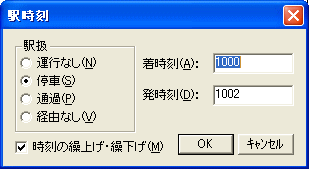
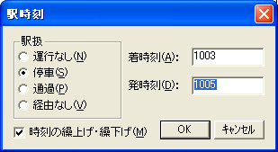
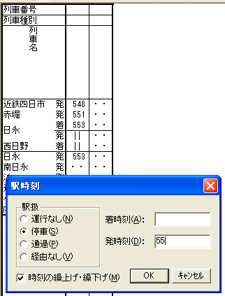
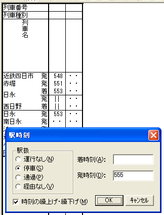

[駅時刻]ダイアログには、列車の編集操作を迅速・便利にするための、特殊な動作があります。
参照： 駅時刻
この機能は、[駅時刻]ダイアログのにおいて、[駅時刻の繰上げ・繰下げ] のチェックボックスがONの場合にだけ有効です。
[着時刻] ・ [発時刻] 両方のエディットボックスに時刻が設定されている状態で
[着時刻] に設定されている時刻を変更すると、 [発時刻] に設定されている時刻は
[着時刻] の変更に合わせて自動で繰上げ／繰下げになります。
【例】
（１） [着時刻] が "1000" ・ [発時刻] が "1002" になっている状態で・・・

（２） [着時刻] を "1000" から "1003" に変更すると、[発時刻] は [着時刻] が３分繰下げられたのに合わせて、自動的に "1002" から "1005" に変わります。

※ [発時刻] が変わるのは、フォーカスが [着時刻] テキストボックス以外（[発時刻]など）に移動したときか、
[OK] ボタンを押したときです。
[着時刻]・[発時刻] エディットボックスには、時刻の時と分を "000" 〜 "2359" の形式で入力するのが原則です。しかし、時を省略して分だけを入力することもできます。 OuDia はこの場合、前の駅の時刻をもとに、時を補完します。
※ 分のみを入力する場合は、"00" 〜 "59" の形式で、数字を２桁で入力してください。０分から９分までの場合も、十の位に "0" を添えた "00" 〜 "09" の形式で入力しないと、時の補完の機能は働きません。
※ 始発駅の駅時刻に対しては、時の補完ができないため、この機能は働きません。
（１） 前の駅の発時刻が "553" のところで [駅時刻] ダイアログを開き、[発時刻]
に "55" と入力すると、

（２） [発時刻] には省略された時が補完され、自動的に "555" に変わります。

※ 補完が行われるのは、 フォーカスがダイアログの他のコントロールに移動したときか、 [OK] ボタンを押したときです。